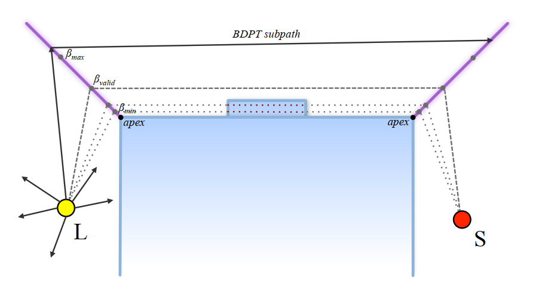

Author: Carl Schissler, Gregor Mückl, Paul Calamia
Institution: Facebook Reality Labs Research, USA
Link: https://dl.acm.org/doi/10.1145/3450626.3459751
Abstract
- Diffraction is one the the most perceptually important yet difficult to simulate acoustic effects
- A phenomenon that allows sound to propagate around obstructions and corners
- A significant bottleneck in real-time simulation of diffraction:
- The enumeration of high-order diffraction propagation paths in scenes with complex geometry
- The paper present a dynamic geometric diffraction approach that consists of an extensive mesh preprocessing pipeline and complementary runtime algorithm
- Preprocessing module identifies a small subset of edges that are important for diffraction using a novel silhouette edge detection heuristic
- It also extends these edges with planar diffraction geometry and precomputes a graph data structure encoding the visibility between the edges
- The runtime module uses bidirectional path tracing against the diffraction geometry to probabilistically explore potential paths between sources and listeners, then evaluates the intensities for these paths using the Uniform Theory of Diffraction
- It uses the edge visibility graph and the A* pathfinding algorithm to robustly and efficiently find additional high-order diffraction paths
- Preprocessing module identifies a small subset of edges that are important for diffraction using a novel silhouette edge detection heuristic
- The paper demonstrate how this technique can simulate 10th-order diffraction up to 568 times faster than the previous state of the art, and can efficiently handle large scenes with both high geometric complexity and high numbers of sources
1. Introduction
-
In order to generate a convincing simulation of reality, the senses must be provided with plausible recreations of the real world
- For virtual reality (VR) and augmented reality (AR) applications, high quality audio is especially important to create immersion and a sense of presence
- Audio sources must be rendered in a way that seems plausible to the user, i.e. where the percept matches the user’s expectation
- Involving simulating how the sounds emitted by sources interact with the virtual environment through reverberation, reflections, and diffraction, among other acoustic phenomena
-
One of the most difficult to simulate yet perceptually important acoustic effects in a geometric acoustics (GA) framework is diffraction
- Diffraction is a wave scattering phenomenon that occurs when sound interacts with a feature in the environment whose size is similar to the wavelength
- With proper simulation of diffraction, sources that become occluded from view are still audible but become low-pass filtered
- In a GA simulation that does not handle diffraction, occluded sources will be abruptly silenced, resulting in a jarring unnatural transition that has the potential to break the perceived plausibility of the auralization
-
The paper present a new efficient approach for simulating diffraction within a real-time GA framework that allows for dynamic motion of rigid geometry and for high-order diffraction
- Focus on a particular subset of the diffraction problem: the simulation of direct diffraction only
- Direct diffraction is defined as diffraction that occurs directly between a source and listener with no reflections involved
- The approach is able to simulate perceptually-important features
- Particularly the smooth transition from unoccluded to occluded state
- Ignoring more complex paths which can be difficult to identify but contribute less to the overall sound field
- Focus on a particular subset of the diffraction problem: the simulation of direct diffraction only
-
Main contributions:
- A mesh preprocessing approach that extracts a reduced subset of silhouette diffraction edges and augments the mesh with diffraction flag geometry
- A runtime approach for efficiently finding high-order diffraction paths using stochastic bidirectional path tracing and a persistent cache of paths
- A complementary approach that uses a precomputed edge-to-edge visibility graph and the A* algorithm to quickly find high-order diffraction paths
2. Background
2.1. Sound Propagation
-
Based on solving the acoustic wave equation (wave-based methods)
- Methods:
- Finite Difference Time Domain (DFTD)
- Finite Element Method (FEM)
- Boundary Element Method (BEM)
- Pros
- Accurate
- Cons
- Very computationally intensive
- Limited to precomputation and static scenes
- Methods:
-
Geometric acoustics algorithm
- Pros
- Can simulate reflection, scattering, and reverberation efficiency
- Cons
- Do not handle wave phenomena like diffraction
- Make the high-frequency assumption that sound travels as a ray, not a wave
- Do not handle wave phenomena like diffraction
- Pros
2.2. Diffraction for Geometric Acoustic
-
Diffraction models that are applicable to GA generally consider the case of diffraction over one or more edges of the scene geometry
- Diffraction order: the number of edges in a path
-
Uniform Theory of Diffraction (UTD)
- Given a source, listener, and sequence of diffraction edges, the UTD can analytically compute an approximation for diffracted sound field
- Fast to evaluate, therefore UTD is attractive for real-time simulation
- Drawback: it assumes every edges to be infinitely long
- May cause implausible results
-
Biot-Tolstoy-Medwin (BTM) diffraction method
- Doesn’t have UTD’s limitation
- Require significantly more compute to evaluate
-
Diffraction based on the uncertainty principle (UP)
- Use stochastic ray tracing in a Monte Carlo integrator to compute the diffracted sound field
- It can be easily integrated into existing path tracing algorithm
- It has slow convergence that makes it unsuitable for real-time application
-
Other object-based diffraction approaches
- Used a hybrid of precomputed wave simulation and ray tracing to simulate sound scattering around objects
- 2D rasterization-based method for approximating occlusion that compares the diffracted path length to the straight-line distance between the source and listener
- Uses a dense volumetric sampling of rays around existing direct and reflected propagation path segments to approximate the BTM magnitude response
-
Main computational challenge
- For either UTD or BTM
- Find sequences of edges that can form valid diffraction paths
- High-order diffraction involves considering the interaction of every edge with every other edge recursively
- A naive approach is to recursively consider all pairs of edges, but this has complexity $O(N^d)$, where $N$ is the number of edges and $d$​ is the maximum diffraction order
-
Optimization
- Frustum and beam tracing have been used to find diffraction paths more efficiently
- Frusta or beams are emitted from the source and propagated through the environment to find paths
- Have difficulty scaling to complex geometries or to high diffraction order due to the large number of child beams and time spent on intersection testing
- Used ray tracing from sources to detect first-order diffraction edges, followed by a traversal of a precomputed edge-to-edge visibility graph to find all diffraction paths originating at those edges
- Reduce the number of edges considered and allowed computation of diffraction up to order 3 or 4 in real time
- But retains exponential algorithmic complexity
- Frustum and beam tracing have been used to find diffraction paths more efficiently
2.3. Mesh Simplification for Acoustics
- Compared to graphics rendering, room acoustic simulation is quite tolerant to aggressive geometry simplification, provided that properties of the environment such as volume and surface area are preserved
- Due to the long wavelengths of low-frequency sound, low spatial resolution of spatial audio as well as the diffuse nature of late reverberation
- Simplification also tends to increase the size of planar surfaces relative to the wavelength, which may improve accuracy for GA
- Methods
- Extract significant faces using a regular grid subdivision of the scene followed by clustering and bounding box fitting to approximate the input geometry
- Drastically reduce the number of faces in a mesh but it does not preserve details, topology, or scene volume
- Use a remeshing approach to first voxelize the scene and then extract an isosurface
- This isosurface extraction was followed by coplanar face merging to reduce the number of faces, and post-processing to patch cracks in the mesh surface
- Use a remeshing approach to simplify the mesh, except that the edge collapse algorithm was used instead of coplanar face merging
- Generated different geometry for each simulation wavelength using proportionally-sized voxel grids, and applied a parallel edge merging step to reduce the number of edges considered for diffraction
- Performed frequency-dependent simplification and used meshes with varying level of detail to speed up real-time simulation
- Using time-dependent geometry, where lower levels of detail would be used for higher-order reflections
- To reduce the number of edges considered for diffraction, compared the angle between adjacent faces to a threshold as a way to select significant diffraction edges
- Extract significant faces using a regular grid subdivision of the scene followed by clustering and bounding box fitting to approximate the input geometry
3. Overview
- Preprocessing stage
- Apply a series of operations to first simplify input meshes, then identify important silhouette diffraction edges using a ray-based heuristic
- Augment the edges with additional diffraction geometry and also precompute a visibility graph between the edges that is used to accelerate the runtime exploration of high-order diffraction paths
- Runtime stage
- Use bidirectional stochastic ray tracing to explore possible diffraction paths, then validate those paths using robust visibility tests
- The resulting paths are stored in a persistent cache to add temporal stability over successive simulation updates
- Utilize the precomputed edge visibility graph and the A* pathfinding algorithm to efficiently and robustly find additional high-order diffraction paths
- The output of the runtime simulation module is a collection of frequency-dependent room impulse response parameters
- These parameters are the input to the audio rendering module which uses standard signal processing techniques to auralize the impulse response parameters
- The final output audio is spatialized using the listener’s head-related transfer function and then reproduced over headphones
- Use bidirectional stochastic ray tracing to explore possible diffraction paths, then validate those paths using robust visibility tests
4. Diffraction Mesh Preprocessing
-
Input: Raw triangle mesh with acoustic materials assigned to each triangle
-
Stages:
-
Apply standard mesh simplification algorithms to reduce the input mesh complexity to a given error tolerance
-
Identify a subset of the edges of the mesh that are relevant for diffraction using a novel silhouette edge identification method and apply additional post-processing to simplify and cluster the selected edges
-
Output: A collection of mesh boundaries
- Sequences of edges that make up the same logical diffraction edge
-
An important part: decouple the diffraction edges from the underlying surface geometry to reduce the number of edges considered for diffraction at runtime
-
-
Augment the simplified mesh with additional diffraction geometry (flags) that bisect the outside angle of each boundary
- These flags are used at runtime to detect when a ray passes nearby a diffraction edge, similar to the Uncertainty Principle method
-
Precomputing a graph of edge-to-edge visibility that can be used to accelerate pathfinding during the runtime algorithm
-
-
In the case of moving geometry, apply this pipeline separately to each rigid part of the scene
4.1. Mesh Simplification
-
Apply standard mesh simplification approaches to reduce the overall geometric complexity
-
Benefits
- By reducing the number of triangles, the number of edges that must be considered in the other preprocessing stages is also reduced
- After simplification some geometric connectivity problems may be corrected
- Improves the consistency of the local mesh curvature and this helps with correct identification of diffraction edges
-
Make use of vertex welding and edge collapse operations
- Forgo the use of voxelization and marching cubes due to the artifacts that can be introduced when using large voxels, as well as their tendency to actually increase the number of diffraction edges by beveling sharp corners after surface reconstruction
-
Vertex welding is applied by greedily clustering each vertex with its neighbors within a certain tolerance distance $\epsilon_{weld}=0.001\mathrm m$
- Use a spatial hashing approach to implement this with $O(N)$​ time complexity
-
Edge collapse algorithm is similar to the standard approach, but with a few extensions
- Limit the maximum amount of error that can be introduced in triangles normals to $\epsilon_m=10°$​, while the original algorithm only prevents flipping of triangles ($\epsilon_n=90°$​​​)
- Help to preserve the overall shape of the mesh better, particularly at the silhouette edges and mesh corners which are important for diffraction
- Prevent simplification across acoustic material boundaries
- Limit the maximum amount of error that can be introduced in triangles normals to $\epsilon_m=10°$​, while the original algorithm only prevents flipping of triangles ($\epsilon_n=90°$​​​)
4.2. Diffraction Edge Extraction
4.2.1. Initial Edge Selection
-
Determine which edges in a mesh are relevant for diffraction
- Too few edges are selected -> Cause some diffraction paths to be missed -> Abrupt occlusion
- Use only the edges that can produce significant diffraction in order to get the best performance
- Identify those edges is a non-trivial task
-
Edges that are between two faces with similar normals are unlikely to produce any significant diffraction
- Previous approach: Dihedral angle to classify edges as diffracting
- The angle between adjacent face normals $\theta_s$, is compared to a threshold angle $\epsilon_\theta$, to determine if the shared edge is a diffraction edge
- If $\theta_s>\epsilon_\theta$, that edge is classified as a diffraction edge
- This can greatly overestimate the number of diffraction edges for highly-tessellated curved surfaces because it uses only local information
- This is especially problematic for highly tessellated meshes or curved surfaces that have $\theta_s$ close to 0
- In such meshes, the value of $\epsilon_\theta$ must be close to 0 to find all relevant edges, which cause many extraneous edges to also be selected -> poor runtime performance
- It’s difficult to find a value $\epsilon_\theta$ that works robustly for all inputs
- A novel diffraction edge identification method based on face normal clustering
- Adapt Felzenszwalb graph segmentation algorithm
- Face adjacency graph
- Cluster adjacent faces that have similar surface normals
- The boundaries between the face clusters are then used as the initial set of diffraction edges
- Compared to existing approaches based on local curvature, this approach works well on meshes with any level of tessellation
- Adapt Felzenszwalb graph segmentation algorithm
- Previous approach: Dihedral angle to classify edges as diffracting
-
The novel diffraction edge identification method
-
Computing the weight for each edge between adjacent faces in the face adjacency graph
- Propose using the cosine of the angle between each pair of adjacent face normals, $w(f_i,f_j)=\cos(\theta_s)=\vec n_i\cdot\vec n_j$
-
These weights are sorted in decreasing order, such that face pairs that have more similar normals come first
-
Each face in the mesh is initially assigned to its own unique cluster, where each cluster maintains information about the distribution of surface normals for faces that belong to the cluster
-
Represent the normal distribution using a cone where the axial direction $\vec a$ approximates the average normal and the opening angle $\theta_{\vec n}$ approximates the spread of normals within the cluster
-
The algorithm proceeds by inspecting each face pair in order of decreasing weight and evaluating whether or not the clusters that the faces belong to can be merged
-
-
To determine if merging two clusters is possible:
- Compute the merged normal cone for the two clusters, i.e. the smallest cone that contains both merged cones
-
Given two cones $i$​ and $j$​, this can be efficiently approximated by first computing the vector $\vec x_i$​, on the boundary of cone $i$​ that has the greatest angle with the axis of cone $j$​, and vice versa to yield $\vec x_j$​
-
The average of the two extreme
vectors is then used as the merged cone axis and the angle between them is used as the opening angle of the cone $\theta_{\vec n}$ -
The clusters are then merged if $\theta_\vec n$​ is less than merging threshold for either cluster
-
The merging threshold is maintained separately for each cluster and is initially set to $\tau=\epsilon_\theta$ at the beginning of the algorithm, where $\epsilon_\theta$​​​ ​is the minimum dihedral angle to consider for diffraction
-
After two clusters are merged, the resulting cluster’s threshold is increased according to the following relation:
$$
\tau(F_i\cup F_j)=\theta_{\vec n}+\frac{k_{\epsilon_\theta}}{|F_i|+|F_j|}
$$where $|F_i|$ and $|F_j|$ represent the number of faces in the constituent clusters
where $k=4$ is a parameter that controls the scale of the clusters
-
This has the effect of requiring stronger evidence for a boundary between small clusters
-
-
-
Merge clusters smaller than a certain threshold with adjacent larger clusters
- This is necessary in the case of noisy mesh data such as that from 3D reconstructions where there may be occasional small clusters that are not included in the cluster for a large flat wall
- For each cluster that is considered too small, we merge it into the neighboring cluster that has the most similar average surface normal
-
Once the face clusters are computed, extract the boundaries between the clusters as the initial set of diffraction edges
- Each boundary is a set of edges that have adjacent faces belonging to the same 2 clusters
- These boundaries are then provided to the next stage of the preprocessing pipeline
-
4.2.2. Curved Boundary Splitting
-
The face clusters in the previous step can have any shape
- There is no restriction on the collinearity of the edges that make up a cluster boundary
- In conflict with the final goal of turning each boundary into a single straight diffraction edge
- Propose a simple approach for splitting mesh boundaries into collinear segments
-
Curved Boundary Splitting
- Calculate a bounding cylinder of the vertices
- Axis
- The dominant direction of the boundary
- Defined by the two vertices in the boundary that are farthest apart
- Radius
- A measure of how collinear the vertices are
- Given by the maximum distance of a boundary vertex from the axis line segment
- The cylinder is used to determine whether or not a boundary should be split into more than one boundary
- Axis
- A boundary should be split if the aspect ratio of its bounding cylinder $\Big(\frac{2r}{h}\Big)$ is more than a certain threshold, e.g. 0.025
- The splitting point is chosen to be the boundary vertex that is farthest from the cylinder’s axis
- The edges that are on either side of the split are placed into one of the two resulting boundaries
- These new boundaries are then recursively split until their aspect ratio falls below the threshold
- The output of this stage is a collection of mesh boundaries that are known to be approximately straight.
- Calculate a bounding cylinder of the vertices
4.2.3. Silhouette Edges
-
Only consider the diffraction that occurs in the shadow region of an edge
-
The only edges that can produce diffraction are silhouette edges
-
i.e. Those edges that can cast a “shadow" when illuminated from a point in the conservative shadow region
- The edge axis is perpendicular to the image
- The edge is shared by faces $f_0$ and $f_1$ that have face normals $\vec n_0$ and $\vec n_1$
- The exterior angle between $f_0$ and $f_1$ is bisected by edge normal $\vec n_e$ and a planar diffraction flag that extend a distance $d_{flag}$ from the edge
- Conservative shadow regions: defined by the planes of $f_0$ and $f_1$​
- Shadow regions: bounded by the horizon plane and plane of face $f_{shadow}$
- The horizon plane, with normal vector $\vec h$: defined by the edge vertices and the reference point $\vec p_{ref}$​, which corresponds to a source, listener, or point on a previous diffraction edge, calculated as $\vec h=(\vec v_1-\vec v_0)\times (\vec p_{ref}-\vec v_0)$
- $\epsilon_h$ and $\epsilon_f$ extend the shadow region on the horizon and face sides
- Enable smoother transitions between direct and diffracted state
-
-
A novel approach to reliably identify these silhouette edges
- Utilize global information about the structure of the mesh acquired through stochastic ray tracing from points on an edge to determine whether or not a given edge is a silhouette
- Based on the observation that in order for an edge to contribute to diffraction, it must be able to cast a shadow, and that a source or listener with non-zero size must be able to go into the conservative shadow region on both sides of the edge
- Main idea: if there are other parts of the mesh that completely obstruct one or both sides of a given edge such that no sound source or listener can form a shadowed path over the edge, that edge cannot produce any diffraction paths
-
Algorithm
-
The information can be determined approximately by stochastic ray tracing in the conservative shadow regions (CSR) of each edge
-
Emit rays that randomly sample the CSR from uniformly-sampled random points on the edge
-
The number of rays traced for an edge, $N_{samp}$, is determined by its length and the angular size of the CSR:
$$
N_{samp}=\min\Bigg(N_{samp}^{max}, \dfrac{|\vec v_1-\vec v_0|_2}{h_d}\dfrac{\theta_s}{h_\theta} \Bigg)
$$- $\theta_s=\cos^{-1}(\vec n_0\cdot \vec n_1)$ is the angular size of the CSR
- $h_d=0.1\mathrm m$ is the distance sampling resolution
- $h_\theta=5°$ is the angular sampling resolution
- In practice, $N_{samp}$ is limited to a reasonable maximum value, e.g. $10^4$
- To prevent spending too much time on very long edges
-
-
To sample the outgoing ray direction, use a uniform spherical distribution that has been modified to generate rays in a wedge
shape-
The outgoing ray direction in the local tangent space is given by:
$$
\vec r_d=\Big(u_0, \sqrt{1-u_0^2}\sin u_1, \sqrt{1-u_0^2}\cos u_1 \Big)
$$- $u_0$: a uniform random variable in the range $[0,\theta_s)$
- $u_1$: a uniform random variable in the range $[-\sin\theta_r, \sin \theta_r]$
- $\theta_r=30°$ controls the amount of spreading of the rays in the direction of the edge axis
- $\theta_r=0$​​​ would generate rays that are always perpendicular to the edge
-
Once the local ray direction is generated, it is rotated to mesh space by applying the orthonormal rotation matrix $\pmb R_i=\begin{bmatrix}\frac{\vec v_1-\vec v_0}{|\vec v_1-\vec v_0|_2},\vec n_i,\vec t_i\end{bmatrix}$, where $i$ is the face index
-
-
-
Classify an edge as silhouette if both sides of the CSR have at least $N_{valid}=1$ rays that don’t hit anything within a certain distance, $\tilde d_s$
-
Use this information as a proxy for whether or not a source or listener can be occluded by the edge
-
The distance $\tilde d_s$​ is proportional to the diameter of a source or listener, $d_s$
- As a source or listener grows bigger, an edge must protrude further from the nearby geometry to produce any diffraction
- $d_s$​ is a parameter of our algorithm that controls how aggressive the silhouette edge detection is
- Here use $d_s=0.25\mathrm m$, which roughly corresponds to the size of a human head
- Yellow circle: a sound source or listener with diameter $d_s$​
- Red rays: represent random rays generated by $\vec r_d=\Big(u_0, \sqrt{1-u_0^2}\sin u_1, \sqrt{1-u_0^2}\cos u_1 \Big)$
- In this figure:
- Edge (a) is not silhouette edge because the circle cannot be placed where it is completely occluded by the edge and all of the rays hit
another face before traveling distance $\tilde d_s$ - Edge (b) is classified as a silhouette edge because at least $N_{valid}$ rays were able to travel for a least distance $\tilde d_s$​​ and because the circle can be occluded by the edge
- Edge (a) is not silhouette edge because the circle cannot be placed where it is completely occluded by the edge and all of the rays hit
-
In order for the approach to work correctly, the value of $\tilde d_s$​ must increase for rays that are closer to the CSR boundary
-
If $\tilde d_s$​ did not increase for rays near the CSR boundary, Edge (a) would be erroneously classified as a silhouette edge
-
The value of $\tilde d_s$ for each ray using the following relation:
$$
\tilde d_s=\dfrac{d_s}{\max(\cos(u_0),\epsilon)}
$$
This causes the threshold distance to increase substantially for rays that have large $u_0$
-
-
-
-
Summary of silhouette detection algorithm
- Inspects every input edge and traces rays to determine if that edge is a silhouette
- If at least $N_{valid}$ rays on both sides of an edge are able to travel a distance of at least $\tilde d_s$​ before hitting other geometry, then that edge is classified as a silhouette
4.3. Diffraction Geometry Construction
-
Inspired by the Uncertainty Principle (UP) diffraction approach
- Augmenting the main geometry with diffraction flags - quadrilaterals that bisect the outside angle of diffraction edges and protrude a distance proportional to the wavelength of the lowest frequency band, e.g. $d_{flag}=6\lambda$
-
Construct a similar set of diffraction flags but do not require any particular flag length, $d_{flag}$
- The accuracy of the diffraction approach does not depend on the flag length due to the use of the analytical UTD diffraction model
- Changing the flag length changes the diffracted sound intensity for UP because in that model the flag is an integral domain
- In this paper’s approach, the length of the diffraction flags controls how likely it is for a ray to intersect a flag and find diffraction paths over the associated edge
- Use $d_{flag}=1.0\mathrm m$​​​ as a reasonable tradeoff between finding enough diffraction paths and spending too much time on ray-versus-flag intersection tests for rays as they traverse the scene
-
Algorithm
-
Convert the input mesh boundaries, each made up of one or more edges, into singular diffraction edges that act as proxies for the underlying surface geometry
- Decouple the surface geometry representation from the edges used to compute diffraction effects
- Each roughly collinear mesh boundary is approximated with a single straight edge
- Apply the approach discussed in previous section Curved Boundary Splitting a second time to compute the best-fitting proxy edge for a mesh boundary
- Calculate the local geometric information needed for diffraction, namely the adjacent face normals of the proxy edge
- Compute the area-weighted average of the face normals on each side of the boundary after assigning each adjacent face to one side or another based on the similarity of its normal vector to the faces processed so far
-
Determine where to place the two far vertices for each flag
-
The simplest approach
-
Place the far vertices at distance $d_{flag}$​ form each edge vertex in the direction of the edge normal, e.g. $\vec v_i+\vec n_e d_{flag}$
- Work well in many cases, but can fail with certain meshes
- Consider the diffraction edges at the top ring of a tessellated cylinder, like follow figure:

- Placing the far vertices along the edge normal produces many gaps in the ring of flags that may reduce the effectiveness of the runtime diffraction algorithm
-
Using the vertex normals rather than the edge normal to determine the far vertex locations, e.g. $\vec v_i+\vec n_{v_i}d_{flag}$
- Exception: if both vertex normals point toward the center of the edge, we use the edge normal instead
- Use vertex normals on the convex parts of the mesh and edge normals on the concave parts
-
-
-
Support intersecting rays against either the surface mesh or the flags
- Put the additional flag geometry in a separate mesh and acceleration structure with the same transformation as the surface mesh
- A bitmask is then used by the ray tracer to select what type(s) of geometry each ray should intersect with
- Flags should not interfere with next event estimation in the path tracer or line-of-sight checks in the runtime diffraction algorithm
-
4.4. Diffraction Graph
- Build a separate directed edge-to-edge visibility graph between the final set of diffraction edges for each rigid mesh in the scene
- Used in the runtime graph traversal algorithm to speed up the search for diffraction paths
- The data structure is a flat array of edge neighbor indices
- Generate the graph in a different way that scales better to complex scenes with many edges
- In practice most edges can only diffract with a few neighbors
- Handles approximate partial visibility and has $O(N)$ time complexity
- Utilize the diffraction flag geometry along with stochastic ray tracing to determine whether or not edges are mutually visible
- For each edge $e_i$ in the mesh, the paper emit random rays in the conservative shadow regions according to the same distribution used to generate silhouette rays (See Section 4.2.3), but with $\theta_r=60°$
- These rays are then intersected with the surface mesh to find the ray endpoint at distance $d_{max}$
- The same ray is intersected with the diffraction flags to find all hits along the ray up to distance $d_{max}$
- For each flag intersection, we check to see if the associated edge, $e_j$, is in the CSR of the edge $e_i$ that emitted the rays
- This condition is met when the signed distance of an edge endpoint to the face planes of the other edge is more than $\epsilon_f$ for one plane and less than $\epsilon_f$ for the other
- Additional tolerance $\epsilon_f$ that prevents edge pairs that share a face plane from being discarded
- It this succeeds, a directed link is added to the graph from edge $e_i$ to edge $e_j$
- Another improvement
- Make to the graph data structure is to partition the links originating from a given edge into two sets corresponding to the two sides (i.e. CSR) of the edge that generated the connections
- By partitioning the outgoing links in this way, the graph search algorithm can be sped up by about a factor of 2
- Example: if the current position of the diffraction graph search is on one side of the edge, it only has to explore neighboring edges that were visible to the far side of the edge because the other edges would not be able to form valid diffraction paths
- Make to the graph data structure is to partition the links originating from a given edge into two sets corresponding to the two sides (i.e. CSR) of the edge that generated the connections
5. Diffraction Runtime
-
Problem
- Finding direct diffraction paths between every source and listener in the scene each time the simulation is updated
-
Approach
- Based on the idea of intersecting rays with additional diffraction flag geometry, originally proposed for the UP diffraction method
- In contrast to the UP approach, the paper don’t rely on stochastic ray tracing to directly calculate the diffraction path intensity
- Use a UP-like approach to find sequences of diffraction edges in a random ray traversal, but instead use the UTD diffraction model to analytically compute the path intensity
- Maintain a persistent cache of these paths over the course of the simulation to improve the temporal coherence
- Propose a graph traversal algorithm to find high-order paths more quickly
-
Advantages
- Like UP, its time complexity does not scale exponentially with the maximum diffraction order and it can be easily integrated into existing acoustic path tracers
- Enables very high-order diffraction to be calculated with good performance, even in scenes with high geometric detail
- Unlike UP, the degree of convergence of the results does not depend on the number of rays traced
- Efficiently handle diffraction between multiple dynamic objects
- Like UP, its time complexity does not scale exponentially with the maximum diffraction order and it can be easily integrated into existing acoustic path tracers
5.1. Ray Tracing
-
Core of runtime system: Bidirectional path tracer (BDPT) with multiple importance sampling
- Use this to compute early reflections and to build an energy-decay histogram for the late reverb from which frequency-dependent reverberation times can be determined
- Diffraction approach is integrated within the path tracer and is similarly bidirectional
- It can find diffraction paths starting from either the listener or a source
- This bidirectionality improves the likelihood of finding paths in certain geometric configurations where either source or listener is highly occluded
-
In the path tracer, consider diffraction only for subpaths originating at a source or listener that have not yet intersected any surfaces
- This is consistent with our restriction to only direct diffraction
- For these subpaths, intersect the constituent rays with both surface geometry and diffraction flag geometry to find the nearest intersection
- If the intersection is with a surface mesh, we reflect or transmit the ray according to the surface material and disable intersections with further diffraction flags
- Otherwise, the ray hit a diffraction flag and remains a candidate for more diffraction events
-
Since flags can stick through geometry, we trace an additional ray from the ray vs. flag intersection point toward its projection on the edge to verify that the edge is visible
- If so, try to find paths to sources or listeners in the scene that are in the shadow region of the edge
- For each of these possible paths, we evaluate whether or not diffraction over the edge is valid, given the sequence of previous edges in the subpath
- If a precomputed diffraction graph is available for the intersected mesh, we can also perform a deterministic graph search to find additional high-order diffraction paths (Diffraction graph traversal)
- Analogous to deterministic next event estimation in a path tracer
- If the edge is not in a valid configuration to produce diffraction, the ray continues past the flag in its current direction without modification
-
After any paths have been found for the current edge, we modify the outgoing ray direction to explore the scene further
- One possible ray distribution is the diffraction probability density function (DAPDF) proposed for the UP diffraction model
- However, found in practice, a simple lambertian distribution on the opposite side of the flag empirically finds more diffraction paths and is faster to sample
- Once the ray is redirected, we modify the ray’s frequency-dependent energy according to the DAPDF
- Ensure that the outgoing ray has the correct diffracted energy for its direction, and also that further reflections of that subpath are influenced by the diffraction that occurred earlier in the path
- One possible ray distribution is the diffraction probability density function (DAPDF) proposed for the UP diffraction model
-
Ray tracing repeats until a surface mesh is intersected or a maximum number of diffractions occur, at which point the further rays for the subpath are handled using standard BDPT
5.2. Path Validation
5.2.1. Shadow Test
- Each diffraction edge in a subpath must intersect the shadow region of the previous edge, if one exists
- The shadow region is defined as the intersection of the two half-spaces corresponding to the shadow face plane and the shadow horizon plane
- The shadow horizon plane is defined by the diffraction edge vertices $\vec v_0$, $\vec v_1$ and the reference point $\vec p_{ref}$​, which for the first edge is the source or listener position
- For diffraction beyond 1, $\vec p_{ref}$​​ is the point on the previous edge that creates the largest (i.e. closest to conservative) shadow region
- This can be determined by clipping the previous edge’s line segment with the face planes of the current edge, so as to limit the previous edge segment to only the part in the current edge’s CSR on the non-shadowed side
- If the previous edge is completely outside of this region, diffraction cannot occur between the edges
- This can be determined by clipping the previous edge’s line segment with the face planes of the current edge, so as to limit the previous edge segment to only the part in the current edge’s CSR on the non-shadowed side
- The clipped endpoint that creates the shadow region with greatest angle is chosen as $\vec p_{ref}$ and the horizon plane normal $\vec h$ is calculated as $\vec h=(\vec v_1-\vec v_0)\times(\vec p_{ref}-\vec v_0)$
- Use a few dot products to check if the current edge intersects the shadow region for the previous edge
- Once a potentially valid subpath is found, we can then check for connections to sources or listeners that are in the shadow region of the last edge using a similar shadow test
5.2.2. Shadow Test Tolerances
-
Allow a tolerance of $\epsilon_h=1.0\mathrm m$ for the horizon plane and $\epsilon_f=0.1\mathrm m$ for the shadow face plane
-
The tolerance $\epsilon_f$​ allows our approach to find diffraction paths between coplanar edges without numerical issues
- It also avoids problems where the diffraction wedge geometry doesn’t correspond exactly to the surface mesh
- For instance, if the averaged face normals for a proxy edge are slightly wrong, the shadow test might reject otherwise valid diffraction paths. Introducing a face plane tolerance helps to avoid these geometric issues.
- It also avoids problems where the diffraction wedge geometry doesn’t correspond exactly to the surface mesh
-
The large horizon plane tolerance $\epsilon_h$​​​​ is to anticipate diffraction paths before they are needed and enable smooth transitions between direct and diffracted sound
- This is important when a source or listener moves from the region where direct sound is valid into the shadow region of an edge
- It’s possible that a ray may not immediately hit the flag for the edge
- Due to the random nature of the rays
- Resulting in a temporary gap in the audio until the diffraction path is found
- This phenomenon is more problematic with high-order diffraction because those paths are much less likely to be explored by random ray traversal
- By anticipating diffraction paths that may soon become valid, those paths are more likely to be in the path cache when they are actually needed (i.e. when the direct sound becomes occluded)
- In the case where direct sound is unoccluded, these anticipated paths are not used for auralization
5.2.3. Visibility Test
-
For each source or listener in the shadow region, check to see if that source or listener can form a valid path back to the listener or source that emitted the subpath
-
Compute the apex points (points where diffraction occurs) on each edge using the Newton’s method approach
- An important detail: clamp the points to be on the edge’s line segment
- This is needed for robust diffraction around curved surfaces with many small edges
- In such cases, the apex point often is not between the edges’ endpoints, and rejecting these paths would make the diffraction significantly less robust
- An important detail: clamp the points to be on the edge’s line segment
-
Once the apex points are determined, then trace a series of rays between the source, apex point(s), and listener to determine if the path is blocked by other geometry
-
Bias each apex point a variable distance $\beta$ out from the edge along the edge normal $\vec n_e$​​​ to prevent self-intersection of rays with neighboring faces, and also to implement a robust soft visibility test
-
Main idea of soft visibility test
- If all rays in the path are unoccluded for some $\beta \in [\beta_\min,\beta_\max]$, then that path is considered valid
- Set $\beta=\beta_\min$ and then trace rays between all of the points along the path
- If any rays are blocked, we then geometrically increase $\beta$ by a factor of 2 and trace more rays between the new biased apex points
- Repeat this until $\beta\geq \beta_\max$. If no $\beta$ passed the visibility test, then the diffraction path is discarded
- Use $\beta_\min=0.01\mathrm m$ and $\beta_\max=1.0\mathrm m$

-
-
5.3. Diffraction Path Cache
-
Purpose: reduce unnatural variation in the sound
- The diffraction paths that are found on each simulation update may be different because different random rays are traced
- Lead to audible artifacts in real-time applications where the number of rays is small
- Leverage the idea of a persistent cache of paths and adapt it to diffraction
- The diffraction paths that are found on each simulation update may be different because different random rays are traced
-
The cache contains diffraction edge sequences from previous time steps that are known to be valid
- The cache entries are stored in a hash map data structure accessed by an integer key that is generated from a hash of the source index, listener index, and edge indices for a path
- At the beginning of each time step, the cache entries are revalidated using the approach from visibility test and newly invalid entries are discarded
- During ray tracing, as new valid paths are found, they are inserted into the cache
- Insert a special invalid entry in the cache to indicate that that edge sequence shouldn’t be checked again this frame
- For explored paths that are known to be invalid
- Use the cache to avoid checking the same edge sequences for diffraction more than once on each frame
- At the end of each time step, inspect the contents of the cache and pick the loudest single diffraction path for each source/listener pair
- The intensity and direction for this path is then used for the final audio rendering whenever the direct sound is occluded
- i.e. the same interpolated delay line tap is used for direct sound and diffraction to ensure smoothness
-
In scenes with many edges, the number of paths that are in the cache can increase substantially
- If the cache is too large, it can slow down revalidation of the cached paths on the next simulation update
- The cache also prioritizes the valid paths in the cache based on the intensity of the loudest frequency band
- Use an additional min-heap data structure to dynamically rank the paths as they are found and discard all except the top $N$
- $N$ is chosen to be proportional to the number of sources in the scene. e.g. $N=20$
- If a new path is found and it is quieter than the Nth quietest path, we don’t add that path to the valid set (though we still mark that path as explored on this frame)
- This effectively enforces a maximum size for the set of valid paths in the cache globally for all sources/listeners
- While not directly perceptually motivated, this scheme produces an approximate kind of perceptual prioritization, where if the scene is complex, the quietest paths will be masked by the louder ones
- If the cache is too large, it can slow down revalidation of the cached paths on the next simulation update
-
Main reason to restrict the rendered output to just one path is because it helps to overcome deficiencies with the UTD diffraction model
- UTD assumes every edge is infinitely long and that the adjacent faces are also infinite
- Cause UTD to produce a total diffracted sound field that is much too loud in some geometric configurations
- Since UTD considers each path to be over an infinite edge, the sum of diffraction contributions is not physically correct or plausible
- By picking the single loudest (usually shortest) path, we get a diffracted sound field that is much closer to correct in these situations.
- UTD assumes every edge is infinitely long and that the adjacent faces are also infinite
5.4. Diffraction Graph Traversal
-
Use precomputed edge-to-edge visibility graph
- Improve robustness and performance
- Increase the likelihood that we find valid high-order diffraction paths between sources and listeners that are separated by complex geometry, rather than relying on the random traversal of diffracted rays to find high-order paths
- Apply the A* algorithm from the agent navigation field to find the shortest diffraction path through the graph starting from the intersected flag
- While this only finds one path through the graph for each query, it tends to be a prominent path because of distance attenuation
-
The graph traversal begins whenever a diffraction flag with the correct orientation is intersected by a BDPT subpath
- Do a separate traversal for each source or listener in the scene that was not able to form a valid diffraction path directly over the edge, i.e. we only perform the graph traversal when a lower-order path was not found using visibility test
- At this point, we transform $\vec p_{ref}$ and the goal source or listener into the mesh’s local space so that the search can operate locally to avoid transforming vertices and normals
- The search starts at the graph node corresponding to the intersected flag
- From there, we investigate only the neighboring nodes that are on the opposite side of the flag from $\vec p_{ref}$
-
For each neighbor, compute the estimated distance from the neighboring edge to the goal source or listener
- This is the A* heuristic that is used to rank potential paths through the graph
- The choice of heuristic influences which paths are prioritized
- Using the point on the neighboring edge that is closest to the line between the source and listener
-
Once the distance from the closest point on the neighbor to the goal is determined, it is added to the shortest distance through the graph from the starting edge to the current edge to yield the total estimated distance for the neighbor
- Discard any neighbors that are in the A* closed set and which have distance estimates greater than best path through the graph to that node, if the neighbor was previously visited
- If a neighbor is not in the A* open set or has a distance estimate lower than the best so far, we then check the edge further to see if it is in a proper geometric configuration for diffraction according to shadow test
-
Once all neighbors are either discarded or put into the A* heap, we check the top of the heap (i.e. the node with smallest distance estimate) to see if a valid diffraction path is formed from the starting node to the top node
- First check to make sure the goal point is inside the shadow region of the final edge
- If this succeeds, the edge sequence for the shortest path is reconstructed and transformed into world space for the final path validation and visibility testing
- If the path is valid, that path is inserted into the cache and the graph search terminates
- Otherwise, the neighbors of that node are investigated recursively
-
This process repeats until a path is found or until a maximum number of nodes has been visited
- If no valid path through the graph exists, which is sometimes the case with diffraction through complex environments, A* degenerates to Djikstra’s algorithm and explores the entire graph
- By limiting the number of nodes that are visited, we can avoid spending a lot of time searching the extraneous parts of the graph when no path actually exists
- Suggest using a limit that is 2 - 3 times larger than the maximum diffraction order
6. Implementation
7. Result
7.1. Scene


7.2. Preprocessing
- The time taken by each section of our preprocessing pipeline
7.3. Runtime
- The runtime performance with respect to the maximum diffraction order
-
The runtime performance with respect to the varying diffraction flag lengths

-
The number of paths found for varying diffraction flag lengths
7.4. Validation
- Paper’s approach vs. Offline FDTD simulation
- Two different configuration of paper’s approach vs. Offline FDTD simulation
8. Conclusions
-
Presented a complete approach for simulating approximate acoustic diffraction for real-time AR and VR applications
- Uses a novel mesh preprocessing pipeline to identify a reduced set of diffraction edges as well as construct diffraction flag geometry and edge visibility graphs
- Traces rays against the diffraction flags to probabilistically explore possible diffraction paths, then computes the path intensities using the UTD diffraction model
- Utilize a precomputed edge visibility graph and the A* algorithm to greatly speed up the exploration of high-order diffraction paths
-
This diffraction technique is between 2.7 and 586 times faster than the previous state of the art in real-time high order diffraction, depending on the
scene, and is able to scale efficiently and robustly to large scenes with high geometric detail -
Evaluated its objective accuracy by comparing to an offline FDTD wave simulation
-
Limitations
- Only consider direct diffraction between a source or listener, i.e. diffraction paths consisting of only edge diffraction with no reflections
- In theory, combinations of reflection and diffraction are compatible with paper’s approach, but would require changes to how paths are stored and accessed in the diffraction path cache, and also changes to how the path intensity is evaluated
- The generation of unique cache identifiers for diffuse reflections may prove more difficult than for diffraction edges or specular reflections
- Has all of the limitations of UTD such as inaccuracy with small edges
- Other more-accurate diffraction models like BTM could be used in place of UTD to ameliorate some of these issues
- The diffraction graph traversal algorithm only finds a single path per edge, though this nevertheless produces plausible results
- Since the graphs for each mesh in the scene are disjoint, the graph search can only find diffraction paths around individual objects
- Only consider direct diffraction between a source or listener, i.e. diffraction paths consisting of only edge diffraction with no reflections
-
Future work
- Apply this diffraction method to mobile class devices where compute is extremely limited
- Explore possibilities for leveraging more precomputation to further reduce the runtime overhead of diffraction